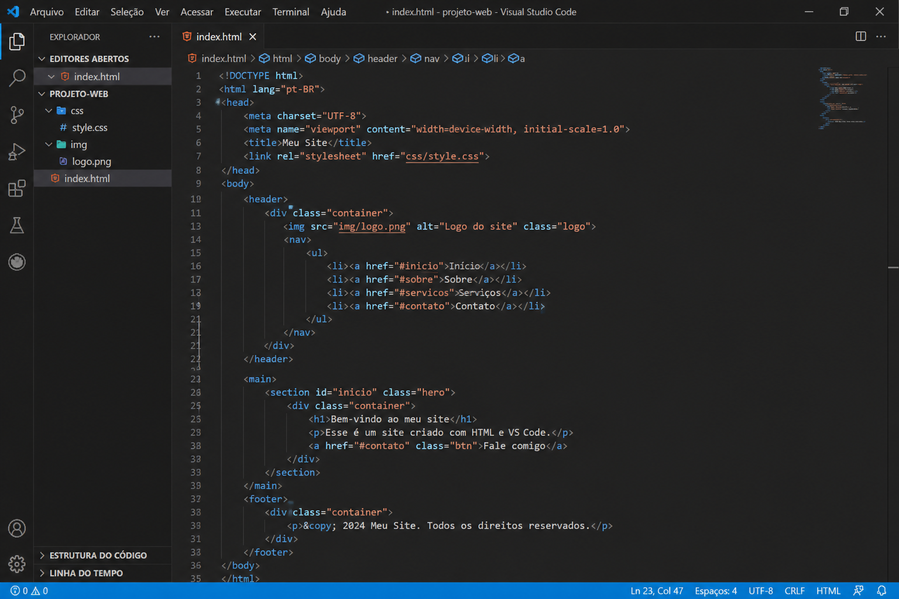

CSS (Cascading Style Sheets) é uma linguagem de estilo utilizada para definir a aparência visual de páginas desenvolvidas em HTML ou XML. Por meio do CSS, é possível controlar diversos aspectos do design de um site, como cores, fontes, tamanhos, espaçamentos, alinhamentos e posicionamento dos elementos na tela. Além disso, o CSS permite separar o conteúdo da apresentação, o que torna o código mais organizado, reutilizável e fácil de manter. Essa separação é fundamental no desenvolvimento web moderno, pois facilita atualizações e melhorias no visual sem a necessidade de alterar o conteúdo da página. Outro ponto importante é que o CSS possibilita a criação de layouts responsivos, ou seja, páginas que se adaptam automaticamente a diferentes tamanhos de tela, como celulares, tablets e computadores. Dessa forma, ele contribui diretamente para uma melhor experiência do usuário, tornando os sites mais acessíveis, agradáveis e funcionais.
O CSS foi criado por Håkon Wium Lie no ano de 1994, enquanto trabalhava no CERN (Organização Europeia para Pesquisa Nuclear). Na época, a web ainda estava em seus estágios iniciais, e havia uma grande dificuldade em organizar a apresentação visual das páginas, já que o HTML era utilizado tanto para estrutura quanto para estilo. Percebendo esse problema, Håkon propôs a criação de uma linguagem específica para cuidar apenas do design das páginas, permitindo separar claramente o conteúdo da aparência. Essa ideia foi essencial para a evolução da web, pois trouxe mais flexibilidade e eficiência no desenvolvimento de sites. O CSS foi oficialmente lançado em 1996 e, desde então, passou por diversas atualizações e melhorias, com novas versões sendo desenvolvidas para atender às necessidades cada vez maiores dos desenvolvedores. Hoje, o CSS é uma das principais tecnologias da web, sendo amplamente utilizado em conjunto com HTML e JavaScript para criar sites modernos, interativos e visualmente atraentes..
O CSS surgiu no CERN, a Organização Europeia para Pesquisa Nuclear, onde Håkon Wium Lie propôs a ideia de uma linguagem de estilo para separar a apresentação do conteúdo em documentos HTML. O objetivo era criar uma maneira eficiente de controlar a aparência das páginas web, permitindo que os desenvolvedores web tivessem mais flexibilidade e controle sobre o design dos sites.
Desde o seu lançamento, o CSS passou por várias evoluções. A primeira versão, CSS1, foi lançada em 1996 e introduziu as propriedades básicas de estilo. Em 1998, o CSS2 foi lançado, adicionando suporte para posicionamento absoluto e relativo, além de novas propriedades. O CSS3, lançado em 1999, trouxe uma série de módulos que permitiram a adição de recursos como bordas arredondadas, sombras e animações. Atualmente, o CSS continua a evoluir com a introdução de novas funcionalidades e melhorias na performance.
O CSS é fundamental para a criação de sites modernos e atraentes. Ele permite que os desenvolvedores web controlem a aparência e o layout de uma página, proporcionando uma melhor experiência ao usuário. Com o CSS, é possível criar designs responsivos que se adaptam a diferentes dispositivos e tamanhos de tela, além de melhorar a acessibilidade e a usabilidade dos sites. O CSS também é essencial para a otimização do desempenho das páginas, permitindo que os estilos sejam carregados separadamente do conteúdo, o que pode acelerar o tempo de carregamento.

| Propriedade | Descrição | Resumo |
|---|---|---|
| color | Define a cor do texto. | Altera a cor das letras exibidas na página |
| background-color | Define a cor de fundo de um elemento. | Define a cor que aparece no fundo do elemento |
| font-size | Define o tamanho da fonte do texto. | Controla o tamanho das letras do conteúdo |
| margin | Define o espaço ao redor de um elemento. | Cria espaço externo entre o elemento e outros |
| Propriedade | Descrição | Resumo |
|---|---|---|
| display | Define como um elemento é exibido na página. | Controla o tipo de exibição do elemento |
| position | Define o posicionamento de um elemento na página. | Controla onde o elemento fica na tela |
| flex | Define como um elemento flexível cresce ou diminui dentro de um container. | Controla o tamanho dentro do flexbox |
| justify-content | Alinha os itens horizontalmente dentro de um container flex. | Alinha os elementos na horizontal |
Melyssa Raphaelle SIlva
Vinicius Matheus dos Santos Amorim